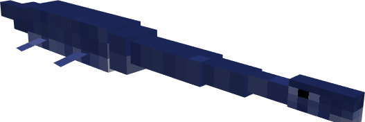
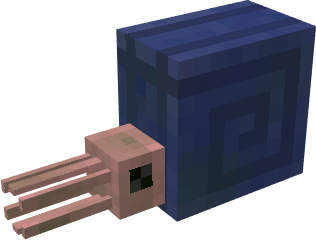
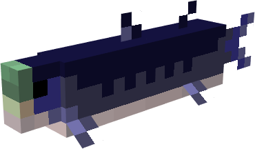
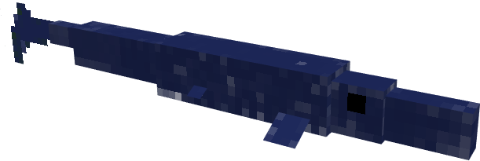
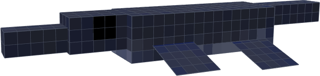

<DOCTYPE html>
       <html>
<head>
<style>
       img {
              width:50%;
              height:50%;
       }
               
       </style>
    <link href="https://creeperwillie.github.io/css/main.css" rel="stylesheet" type="text/css">
<title> Creeper's Projects </title>
</head>
<h1> Current Projects </h1>
              
 <h3>List of Creatures coming to my newest mod</h3>
        <ul>
          <li><a href=https://en.wikipedia.org/wiki/Styxosaurus> Styxosaurus</a></li>
          <ul>
            <li>Largest Marine Plesiosaur (Extinct prehistoric long necked marine reptiles)</li>
                 
          </ul>
          <li><a href="https://en.wikipedia.org/wiki/Tylosaurus">Tylosaurus </a></li>
          <ul>
            <li>Largest Predatory Marine Reptile (Model coming 10/6/19)</li>
                 
          </ul>
          <li><a href="https://en.wikipedia.org/wiki/Platecarpus">Platecarpus <a></li>
            <ul>
              <li>Smaller Surface Hunting Mosasaur</li>
            </ul>
          <li> <a href="https://en.wikipedia.org/wiki/Ammonoidea">Ammonites </a> </li>
            <ul>
              <li>Shelled Cephalopods</li>
                   
            </ul>
            <li> <a href="https://en.wikipedia.org/wiki/Hesperornis">Hesperornis </a></li>
            <ul>
              <li>Seabird similar to a modern day penguin (Model coming 10/5/19)</li>
            </ul>
          <li> <a href="https://en.wikipedia.org/wiki/Gillicus">Gillicus </a></li>
            <ul>
              <li>6 Foot Fish </li>
                   
            </ul>
            <li> <a href="https://en.wikipedia.org/wiki/Plioplatecarpus">Plioplatecarpus </a></li>
            <ul>
              <li>Small Deep Water Mosasaur</li>
                   
            </ul>
          <li> <a href="https://en.wikipedia.org/wiki/Archelon">Archelon </a> </li>
           <ul>
              <li>Large Soft-Shelled Turtle (Skin coming 10/7/19)</li>
            </ul>
          <li> <a href="https://en.wikipedia.org/wiki/Dolichorhynchops">Dolichorhynchops </a></li>
            <ul>
              <li>Small Plesiosaur</li>
                   
            </ul>
          <li> <a href="https://en.wikipedia.org/wiki/Xiphactinus">Xiphactinus</a></li>
            <ul>
              <li>15 Foot Predatory Fish (Model Coming 10/6/19)</li>
            </ul>
          <li> <a href="https://en.wikipedia.org/wiki/Ichthyornis">Ichthyornis </a></li>
           <ul>
              <li>Small Seabird similiar to Seagull (Model Coming 10/6/19)</li>
            </ul>
        </ul>
<a href="https://creeperwillie.github.io/">Return to Home Page </a>
             <h3 class="info"> MCPEDL Page to my released addon </h3>
             <iframe height="200%" width="200%" src="https://mcpedl.com/fighting-armies-add-on/"> </iframe>
                  
             
            
      </h4>
      </body>
       </html>
